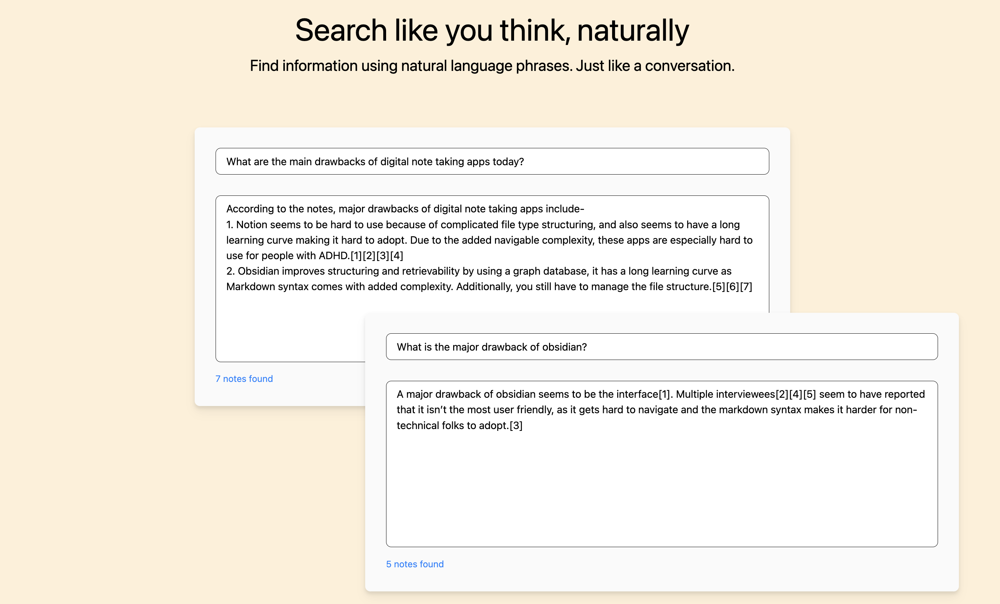
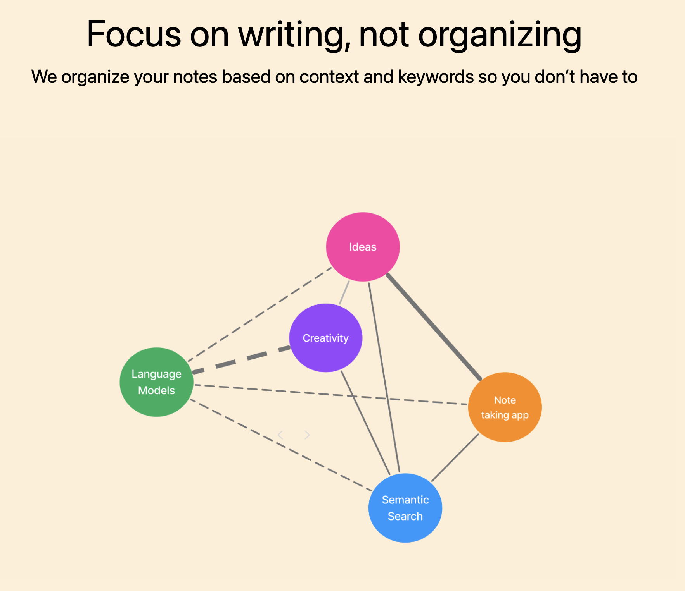

Valet Notes - The Ultimate Note-Taking Solution
Overview
My friend Chinmay and I had a habit of recording information but not being able to find it when we needed to. So we built Valet Notes. Its a note taking app that automatically organizes your information and helps you find exactly what you're looking for when you need to. It can not only find specific information like important dates or addresses but can also provide high level overviews across different notes and topics. Example use cases include summarizing across all your UI course notes or finding the name of a hotel you stayed at in Bali.
My Role
I conducted over 50 user interviews with students, researchers, and professionals, studying their note taking habits and examining the existing softwares they used. I then helped design the UI for Valet Notes and also collaborated on the backend architecture.
Technology Stack
We used knowledge graphs and vector databases to organize information and used semantic search and GPT - 4 to help retrieve information when the user searched for it. The goal was to auto organize notes for the user so they did not have to create folders, tags, etc. When a user recorded a note, Valet Notes would automatically categorize it based on the content and context of the note. We then added it to a knowledge graph where different topics were organized based on their relationships. We also stored a flattened version of this information in a vector database as a fall back option. During retrieval, we traversed the graph and also the vector database to return the most relevant information. This allowed users to easily retrieve information by searching for a keyword or phrase. They did not need to remember exact words.
Development Iterations
Based on user feedback, we decided to build this into a chrome extension. We realized users spent a lot of time on browsers and wanted to save useful information they could easily retrieve while browsing the web. We also used shortcuts to further simplify the note-taking process based on feedback. Users could now record information with a few key strokes.